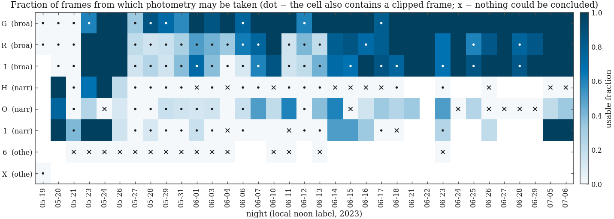
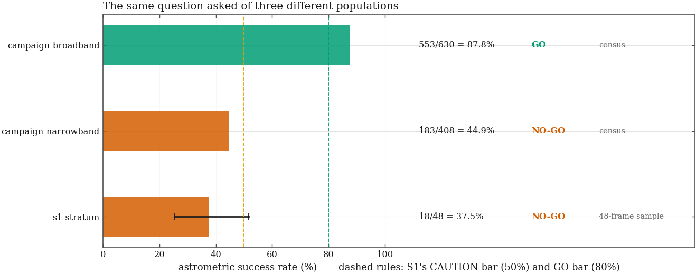
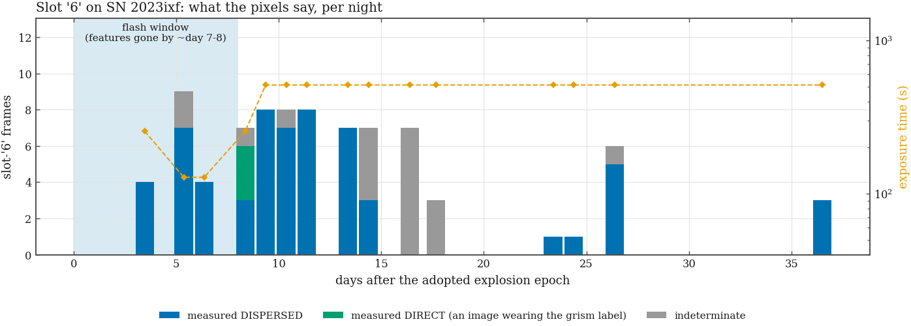

A homogeneous, single-instrument nightly gri and narrowband record of SN 2023ixf from +5.4 to +50 d, released with the saturation matrix that defines where it is trustworthy, validated against the published world dataset. The unconditional clean start is +5.4 d; '+1.6 d' appears only in the saturated-frame inventory. The upside — and the reason ApJ is on the table at all — is the slot-'6' slitless grism series from +3.5 d, which may be the archive's only unsaturated flash-phase Hα record, and an Hα-band evolution curve forward-modelled through a recovered transmission profile. How much of that series is in fact a grism series is MEASURED, not assumed: the panel immediately below is the measurement, and this upside is worth exactly what that panel says it is worth.
7 question(s) answered on this project's own evidence pages, 32 inherited from the shared pipeline, 15 still open in the plan.
How many frames of this supernova does the archive actually hold — once every copy is collapsed and every name the telescope called it by is merged?
sn_g0_frames) rather than a paragraph.At what pixel value does this detector stop telling the truth — and does anyone have a measurement of it, or only a guess?
In which frames is the supernova itself measurable, and in which is it sitting on the detector's ceiling? The strategy's answer was an exposure-scaling argument. This is the pixels.

undetermined: frames with no plate solution whose search box
reaches the screen, which the census declines to call either way.Is the slitless series really the archive's only unsaturated flash-phase narrowband record of this supernova?
The strategy inherited a NO-GO on this campaign's astrometry from the S1 experiment, whose candidate universe was contaminated by spectra it had excluded by filter LABEL. With the gate repaired to read S2c's per-frame measurement, does the verdict move?

Is the slitless series a genuine flash-phase spectral record — and does it clear the promotion bar the strategy pre-registered before any of this evidence existed?

Gate 0 exists to answer three questions and to set one posture. Each answer is stored beside the number it turns on, so a re-run that keeps the word while moving the number is visible in the table rather than only in a reader's memory.
These questions were answered once, for the whole archive, and this project inherits their answers through the tasks that name their stages.
The catalog holds 330,865 rows. How many distinct exposures is that, and… dedup global on (basename, JD)
The catalog carries 3,019 distinct raw target names. How many real… rules + cone-gated synonyms, never fuzzy matching
How many distinct camera configurations produced this archive, and when… keyed on (READOUTM, geometry, binning, EGAIN) — never filter or date
What is “a night”, such that no contiguous observing sequence is ever… local-noon-to-noon: date(JD − 0.7917)
Is each frame actually pointed at the target its name claims? (The T CrB… frame coords vs alias-resolved target reference
Which frames carry defects that downstream stages must know about before… marks, never deletions
Do the inventory numbers published in the five strategy documents (all… the key output — five papers, one frame accounting
Each project needs a working set: its science frames plus the calibration… the staging manifest IS the working set
What exactly does each project's staging manifest claim — and where is… selection rules are reviewable data, not code
Which calibration frames belong in a project's working set, and on what… match_basis: era_exact
A manuscript quotes "30 frames/band", "20 frames", "403 frames / 40… 25 of 25 published numbers reconcile
When a stage opens a frame through a staging manifest, what chain of… archive → manifest → stage table → CSV
The SN panel measured the High Gain clip at ~3,530–3,550 ADU; the CV team…
Roadmap R2: the 2023-06-07 repeated darks were shot for a StackPro…
The reduced/ tree was produced by a pipeline whose calibration files we…
Does flux scale with exposure time — and can the 2024-05-20 Vega BeStar…
§2's photon transfer needed one very special night, and that night was…
The FILTER card names the RLMT's grism slots three different ways across…
Two dispersers flew: a high-dispersion H-alpha unit and a low-dispersion…
One panel called slot 6 a grism; another called it luminance. Both were…
Two live projects depend on slot 6 in opposite directions. The Dwarf/AGN…
Two figures circulate in the project write-ups: the T CrB series is…
Every MACRO paper folds its data on a period; a half-exposure ambiguity… JD = DATE-OBS = UTC exposure start — proven for 189,401 frames, assumed for 3,917
A StackPro frame is the on-camera SUM of 16 sub-reads (S2's PTC result)… worst case 5.67 s — seconds, not milliseconds
Every downstream product needs one authoritative mid-exposure BJD_TDB per… 191,858 of 193,318 frames on the shared time axis
Header consistency (sections 1-3) proves the stamps agree with EACH OTHER… an astrophysical event checks the wall clock
Which frames may the photometry prototype touch, and under what… server-reduced pixels only — one provenance per series
Most polar frames are unsolved (73–95% of the Sloan series carry… astroalign triangles → one reference per (target, era)
With no photometric nights guaranteed and clouds in the data, how does… robust ZP per frame + mean mag per star, per (target, era, filter)
What ties these WCS-free pixel catalogs to the sky — and how far toward… identity + geometry check + an honest offset, not absolute cal
Are the formal error bars TRUE? Both targets are polars whose modulation… check stars only — the target never grades its own errors
Does the assembled machinery produce a light curve a CV astronomer… AN UMa is a polar: its modulation is EXPECTED signal
Each of these is a question the committee strategy put on the plan and nobody has answered yet. The citation is where it came from; the blocker, where there is one, is what would clear it.
What would settle it: A promote-or-appendix verdict on the 83 filter-'6' frames, gated on an offset-trace contamination test.
G · derived from SN2023ixf_LightCurve/ANALYSIS_STRATEGY.md §4 Step 0cSee it in the planWhat would settle it: A colour-term regression per filter code plus the MaxIm→pyscope crosswalk — which also gates template adoption, not just the appendix.
S4 · derived from SN2023ixf_LightCurve/ANALYSIS_STRATEGY.md §4 Step 1See it in the planWhat would settle it: The actual H/O/'1' filter curves, from a manufacturer sheet or a monochromator scan.
OPS · derived from SN2023ixf_LightCurve/ANALYSIS_STRATEGY.md §4 Step 1(d) / Step 6See it in the planWhat would settle it: A published linearity curve from the 0.5 s/2 s ladder we already own, and the star-side screen. The SN-side screen it was paired with is done (Gate 0b); this is the star side.
S2 · derived from SN2023ixf_LightCurve/ANALYSIS_STRATEGY.md §4 Step 2See it in the planWhat would settle it: WCS for the ~177 unsolved broadband frames.
S1b · derived from SN2023ixf_LightCurve/ANALYSIS_STRATEGY.md §4 Step 4See it in the planWhat would settle it: Per-frame zero points, one campaign colour term per filter, nightly extinction plus a second-order (colour × airmass) term.
S4 · derived from SN2023ixf_LightCurve/ANALYSIS_STRATEGY.md §4 Step 4See it in the planWhat would settle it: Aperture photometry bright, template-subtracted forced PSF photometry faint, with the overlap agreement published as a systematic.
S4 · derived from SN2023ixf_LightCurve/ANALYSIS_STRATEGY.md §4 Step 5See it in the planWhat would settle it: Nightly H-band flux over the census-approved epochs, forward-modelled through the bandpass — never presented as a raw 'Hα light curve'.
S4 · derived from SN2023ixf_LightCurve/ANALYSIS_STRATEGY.md §4 Step 6See it in the planWhat would settle it: Morag+23 / Martinez+24 tracks at published parameters, labelled consistency — no independent t0.
S4 · derived from SN2023ixf_LightCurve/ANALYSIS_STRATEGY.md §4 Step 7See it in the planWhat would settle it: A computed spectral window and a 90%-recovery amplitude-vs-period curve on an honest grid.
S4 · derived from SN2023ixf_LightCurve/ANALYSIS_STRATEGY.md §4 Step 8See it in the planWhat would settle it: Per-stack 5σ upper limits — a late-time detection is forbidden.
S4 · derived from SN2023ixf_LightCurve/ANALYSIS_STRATEGY.md §4 Step 9See it in the planWhat would settle it: AJ/PASP or ApJ, decided at week 3 immediately after Gate 0 lands — not at referee stage.
S4 · derived from SN2023ixf_LightCurve/ANALYSIS_STRATEGY.md §2 venue callSee it in the planWhat would settle it: Per-frame and nightly tables with census flags, the saturation matrix, pipeline on GitHub, Zenodo deposit, README regenerated from the manifest.
S4 · derived from SN2023ixf_LightCurve/ANALYSIS_STRATEGY.md §4 Step 10See it in the planWhat would settle it: Figures 1–12: campaign overview, filter identification, the saturation census and linearity, calibration honesty, the gri light curve, the RLMT-vs-the-world centrepiece, the conditional Hα-band and grism panels, nightly sampling, the window function and injection–recovery, model consistency, and the template-subtraction appendix.
S4 · derived from SN2023ixf_LightCurve/ANALYSIS_STRATEGY.md §7 Figure listSee it in the planWhat would settle it: manuscripts/SN2023ixf_LightCurve/main.tex through the outline — including replacing the skeleton's sec:obs pointer at the T CrB strategy with a shared-facility paragraph both papers cite.
Waits on: SN-figures
S4 · derived from SN2023ixf_LightCurve/ANALYSIS_STRATEGY.md §8 Manuscript outlineSee it in the plan{kind=link}
{kind=link}
{kind=link}